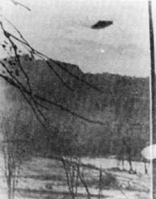

Kenneth Martin (54 ans), sa femme et leurs 3 enfants disparaissent de leur domicile de
Portland (Oregon) après avoir annoncé qu'ils allaient chercher un arbre de Noël.
Rencontre de Hans Gustavsson et Stig
Rydberg à Domsten (Suède).
Photo prise le 22 décembre par le docteur Kowalezewski

A Muszyna (Pologne), le docteur Stanislaw Kowalezewski prend une photo d'une lumière
luisante venant des nuages. Bien que n'ayant pas de filtre sur son appareil il prend la photo à travers la fenêtre,
espérant que la lumière rendra la lueur orange. Kowalezewski dira qu'il pouvait voir la route vers Zegiestowa, la
voie ferrée, la rivière Poprad et le sommet de la silhouette des montagnes baigner dans cette lumière orange qui
était à 500 environ de sa fenêtre. Le négatif aurait été examiné par plusieurs experts qui l'auraient considéré
authentique.
Earl Zrust (jeune entrepreneur en bâtiment) de
Silver Lake (Minnesota), sa femme et leurs 4 enfants disparaissent sans que quiconque ait
su où ils se rendaient.